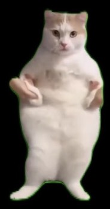

Lost money in crypto, huh?
Boss giving you attitude, huh?
Got dumped, huh?
暗号資産で失敗してHuh?
上司に嫌味を言われてHuh?
恋人に振られてHuh?
猫になればHappy Happy Happy
This is not a place to talk about price.
This is a project to escape from “Huh?”
これは、価格の話をするための場所ではない。
これは、Huh?から逃げるためのプロジェクトです。
A place for people who are bad at being correct humans.
A place where you might accidentally find a token.
正しく生きるのが向いていない人が、
一度、人間をやめるための場所。
偶然トークンを見つけるかもしれない場所。
Cats are free.
Cats are unpredictable.
Cats are festive.
猫は、自由だ。
猫は、気ままだ。
猫は、お祭りが好きだ。
If being human didn’t work out,
being a cat might.
人間としてうまくいかなかった人ほど、
猫のほうが向いている。
Watch Twitter.
Feel something coming.
Go crazy.
Become a cat.
Twitterを見る。
何かが起きそうだとワクワクする。
狂う。
猫になる。
Just watching is fine. Cats don’t force.
見るだけでもいい。猫は気ままだ。強制はしない。
1/30 — SOMETHING HAPPENS
1/30 何かが起こる